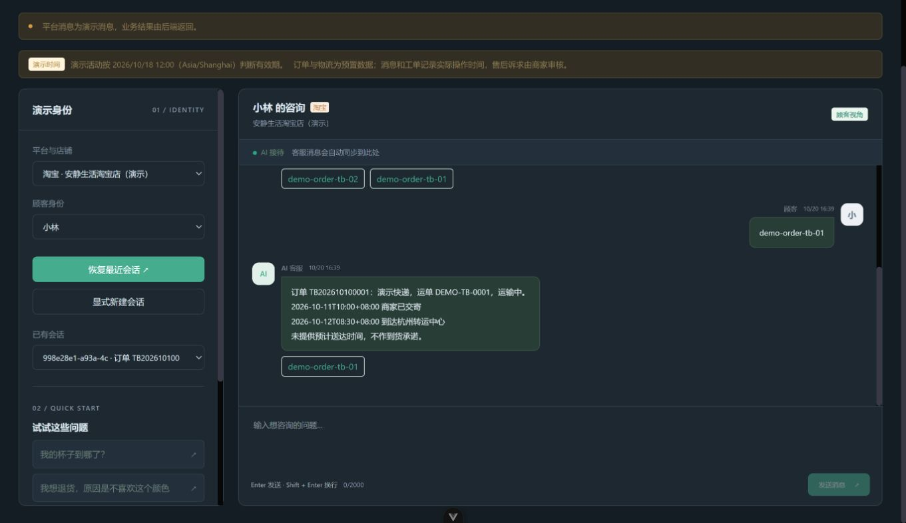
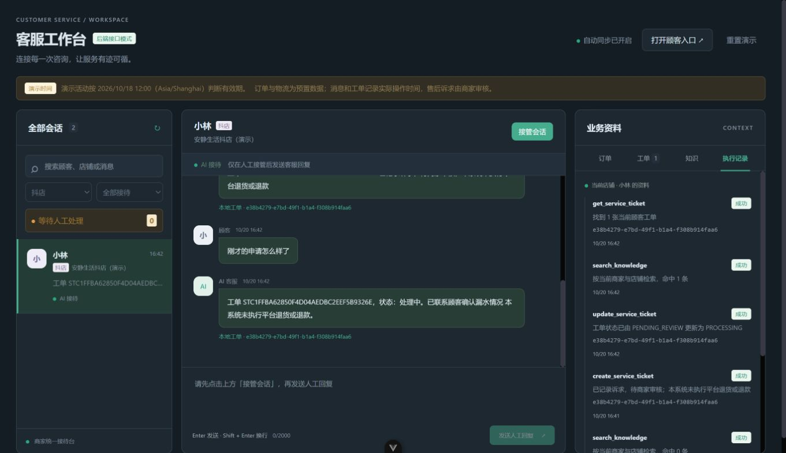
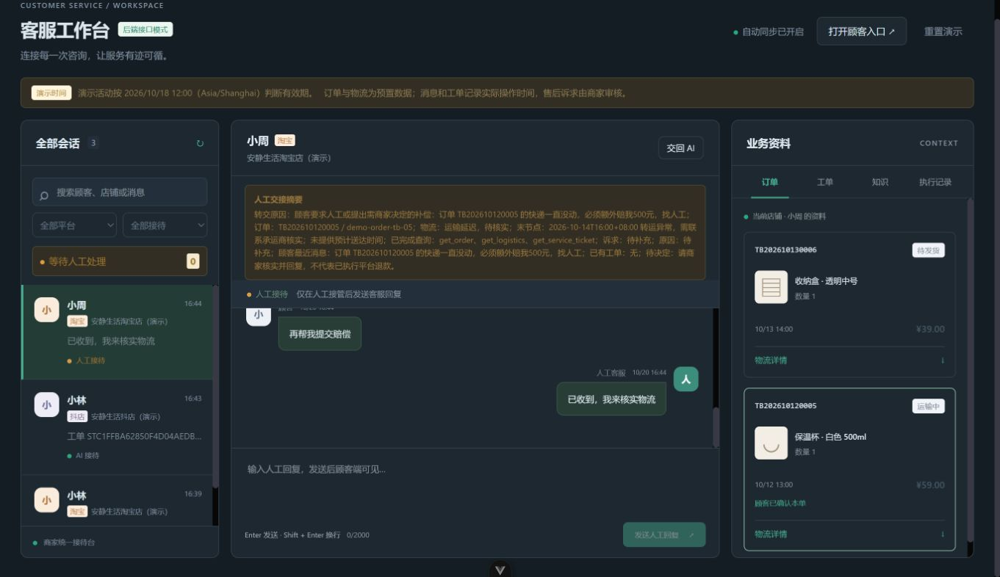
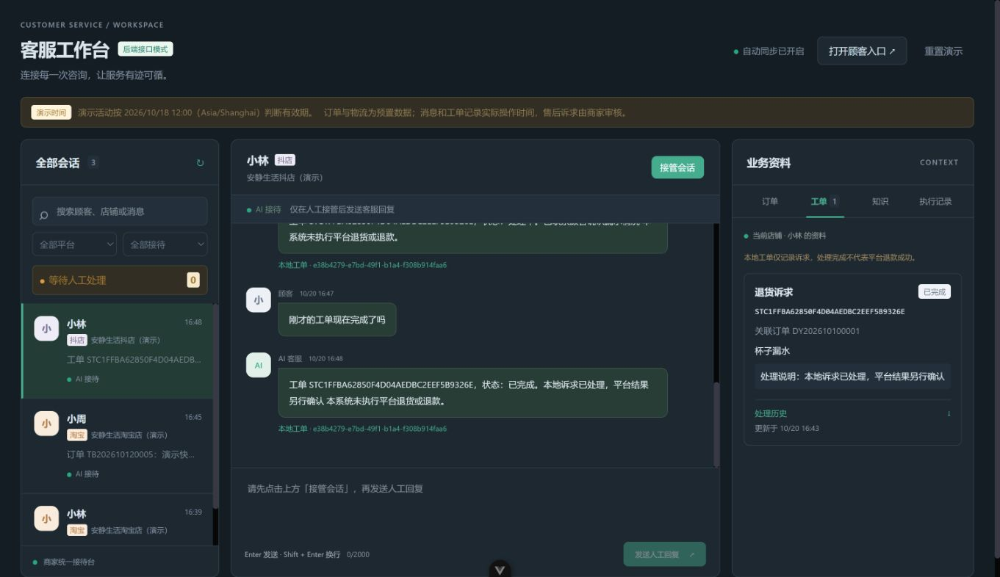

run11 真实业务实测截图回放
这是2026-10-20保存的截图步骤回放，不是实时录像或MP4。模型偶发超时、完整AC及固定尺寸布局仍有待验项。截图实际页面约1369×790；本回放三故事已重置，后续静态验收保留1条物流会话。
完整证据说明 · 自动化结果
淘宝多订单物流
选择TB01后追问“这个”，返回同一订单物流。 查看对应DOM证据

商家更新工单
抖店确认新建本地工单后，商家更新为处理中，保存执行记录。 查看对应DOM证据

人工协作
延迟与500元诉求转人工；接管后顾客消息无AI抢答，人工回复同步。 查看对应DOM证据

工单完成与恢复
商家完成本地诉求，顾客查询原工单号和处理说明；完成不代表平台退款。 查看对应DOM证据
